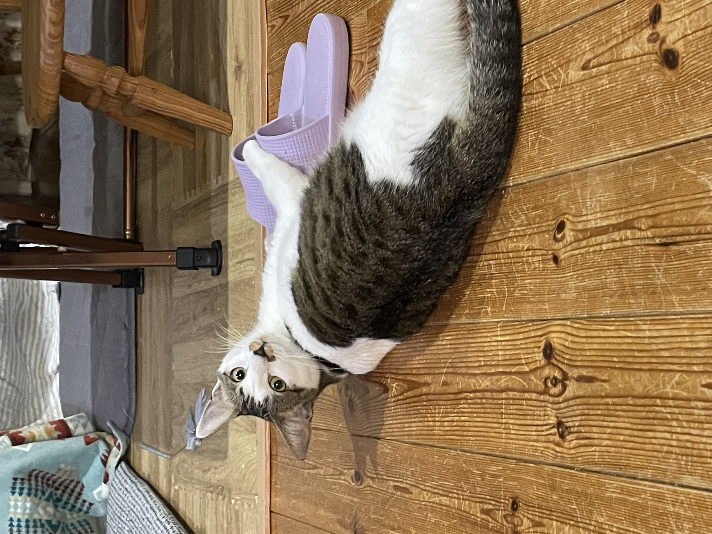
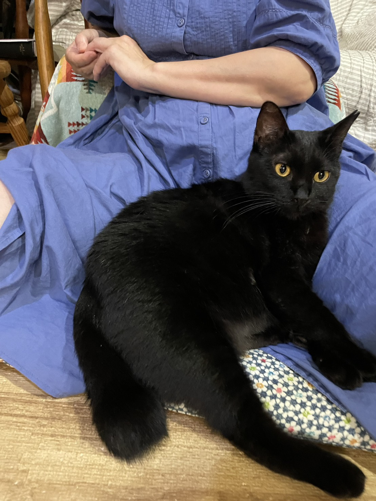

📅 2026年8月20日
夜ご飯の時間。
いつもは、まおとらんがそれぞれ自分の場所に座って待ち、 2匹とも「おすわり」をしてからご飯をもらう。
ところが今日は、まおがらんの場所にちょこんと座っていた。
らんはというと……
「……そこ、自分の場所ですが……？」
と言いたそうな顔で、まおを見ていた。
いつもの場所を取られて、ちょっと困惑しているらんちゃんが可愛かった🐈⬛💕
我が家のかわいい猫たちを紹介します！

優しくて、少し人見知りな乙女。
名前：まお
毛色：白とキジトラ
性格：やさしい、空気読む、女の子女の子してる
好きなもの：隙間、かわいいおもちゃ、膝の上
チャームポイント：声が可愛い、アイラインが入ってるよ！

我が強く、甘えん坊な黒猫。
名前：らん
毛色：黒
性格：まおを可愛がってたら割って入ってくる我の強さ、好奇心旺盛
好きなもの：遊ぶこと、脚の間、ブラッシング
チャームポイント：黒い毛並み、わがままボディー
ボタンを押して、今日の運勢を占ってみよう！
夜ご飯の時間。
いつもは、まおとらんがそれぞれ自分の場所に座って待ち、 2匹とも「おすわり」をしてからご飯をもらう。
ところが今日は、まおがらんの場所にちょこんと座っていた。
らんはというと……
「……そこ、自分の場所ですが……？」
と言いたそうな顔で、まおを見ていた。
いつもの場所を取られて、ちょっと困惑しているらんちゃんが可愛かった🐈⬛💕